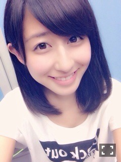

| 2014/05 14 Wed | 斎藤ちはる 宝物。 |
ちはるーむへようこそ。
まず、本当に本当にたくさんのコメント...
ありがとうございますヽ(；；)丿
こんなに反響がくるとは思ってなくて
ただただびっくりしてます。
選抜未経験の私に、
こんなにたくさんの応援がくるなんて。
素直に、すごくすごく嬉しい。
本当に、本当に、ありがとうございます。
ひとつひとつのコメントを、
大事に大事に読ませてもらってます。
そのひとつひとつが、
私の力になっています。
勇気になっています。
元気の源になっています。
そして宝になっています。
私に、たくさんの宝をくれてありがとう。
私はもう、前を向いて歩いています。
目の前には、アンダーライブ、握手会、
そして大事なチャンスの場である
プリンシパルが待っています。
このチャンスを、無駄にはしたくない。
9thも、ひとつひとつを全力で、
楽しんで、頑張っていきます。
そしてなにより笑顔で。
私の笑顔が、たくさんの方に届きますように。
笑顔の輪が、広がっていきますように。

私を支えてくださってありがとう。
本当に本当に大好きです。
斎藤ちはる